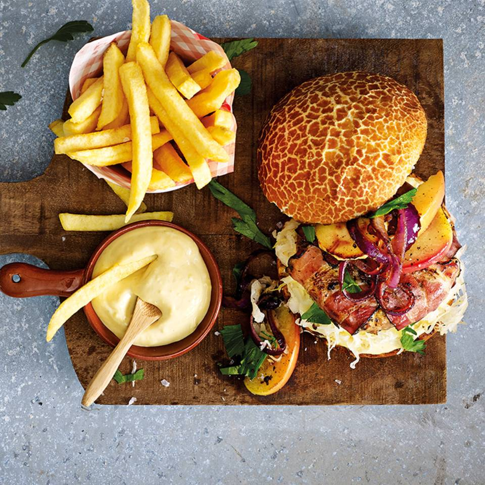

Hamburger

Description
This is a recipe for a delicious homemade hamburger. Pair it with a bun, toppings and sides of your choice! Recipe is for 4 hamburgers.
Ingredients:
- Ground beef 500g
- Cumin
- Mustard
- Ketchup
- Soy sauce
- Egg
- Bread crumbs
- Salt and pepper
- Onions
- Garlic powder
- Onion powder
- Paprika powder
- Oregano
Steps:
- Slice onions very small.
- Throw all of the ingredients into a large bowl.
- Mix with your hands until even and firm. Add bread crumbs until you can easily mold it with your hands.
- Squash the balls until you get the desired hamburger shape.
- Heat butter or oil in a large pan.
- Fry the burgers on high heat until both sides are brown.
- Lower heat and cook until the burgers are reasonably firm.
- Take the burgers out of the pan and wrap them in aluminium foil.
- Let the burgers rest for about 5 minutes.
- Serve!